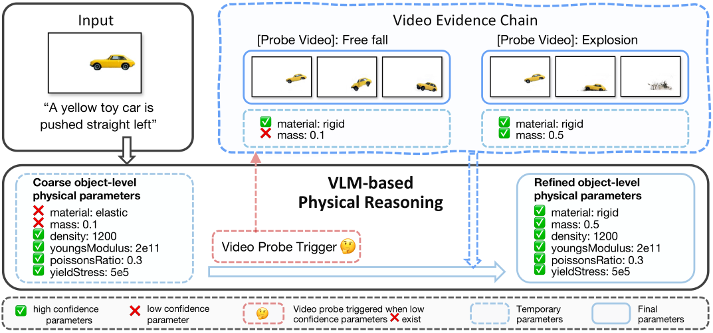
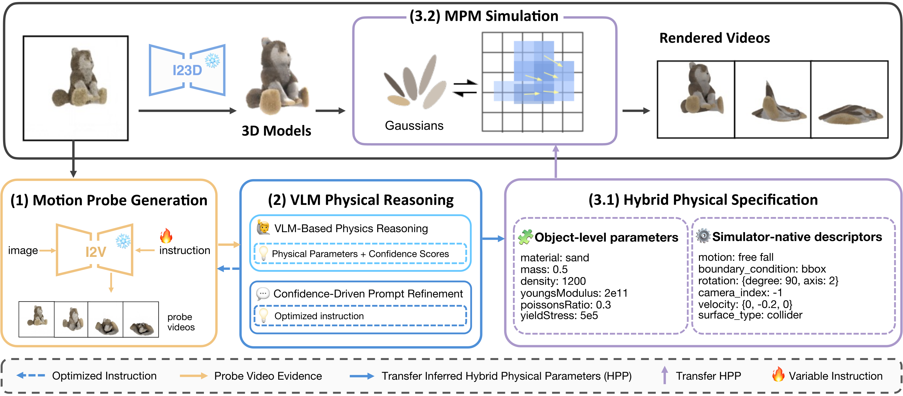
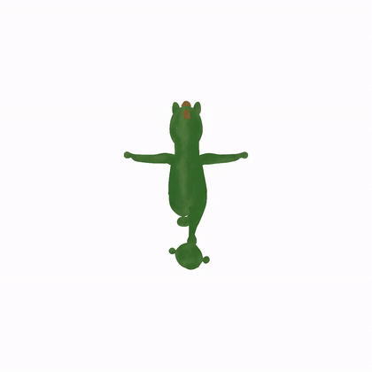
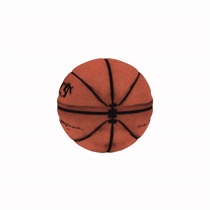

Inferring physical properties from a single image is fundamentally under-constrained. Attributes such as density, elasticity, and yield stress govern how objects move, yet they are largely invisible in a static frame. Existing physics-aware methods attempt to resolve this ambiguity through task-specific fine-tuning or supervised property estimation, but both strategies struggle to generalize across diverse materials and scenes. We observe that different motions expose complementary physical cues. Building on this observation, we propose PhyMAGIC, a training-free framework that actively probes physical properties by synthesizing targeted motions from a single image. Specifically, PhyMAGIC uses a pretrained image-to-video model to construct motion probes that generate diverse dynamic sequences from the input image. A vision-language model then analyzes these sequences to estimate physical parameters, each accompanied by a confidence score. Parameters with low confidence trigger targeted prompt refinement, which generates additional probe motions to gather complementary evidence. Once all parameters reach sufficient confidence, PhyMAGIC compiles them into a complete physical specification and executes it in a differentiable Material Point Method simulator initialized from 3D Gaussian reconstructions. Experiments on diverse real-world scenes demonstrate that PhyMAGIC achieves stronger text–motion alignment and higher human-rated physical plausibility than state-of-the-art open-source video generators and physics-aware baselines.
Keywords: Dynamic 3D · Physical Simulation · Vision-Language Models · Material Point Method
A single image with an ambiguous instruction leaves an object's physics severely under-constrained. PhyMAGIC generates a chain of motion-probe videos that a VLM reasons over, turning coarse, low-confidence guesses into reliable physical parameters — e.g. correcting "elastic" → "rigid" for a toy car once free-fall and collision evidence is observed.


Recovers object-level physical parameters from one static image by combining generative video cues with structured VLM reasoning.
Turns the inferred properties into physically faithful, renderable 3D dynamics.
Each result is generated from a single input image: PhyMAGIC infers the material, reconstructs a 3D asset, and simulates physically consistent dynamics.


@inproceedings{meng2026phymagic,
title = {PhyMAGIC: Physical Motion-Aware Generative Inference
with Confidence-guided VLM},
author = {Meng, Siwei and Luo, Yawei and Liu, Ping},
booktitle = {ECCV},
year = {2026}
}